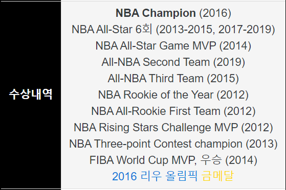

Irving announced that he would forgo his final three seasons of eligibility and enter the 2011 NBA draft, where he was selected with the first overall pick by the Cleveland Cavaliers.Irving was named to the 2012 Rising Stars Challenge, where he played for Team Chuck. Irving scored 34 points in the game, going 8-of-8 from three-point range, and earned MVP honors.He also won the 2012 NBA Rookie of the Year Award with 117 of a possible 120 first-place votes. He was the only unanimous selection to the NBA All-Rookie First Team. For the season, Irving averaged 18.5 points, 5.4 assists and shot 46.9% from the field, including 39.9% on three-pointers.
2012–13 season: First All-Star seasonIrving during warm-ups in 2012 At a Las Vegas Cavaliers practice on July 14, 2012, Irving sustained a broken right hand after reportedly slapping it against a padded wall after committing a turnover."I am a little disappointed", he said. "I have to be more responsible about my health. It was just crazy. It happened so fast."It was announced that Irving would require hand surgery on July 18
2013–14 season: All-Star Game MVPFans chose Irving to be the starting point guard for the Eastern Conference in the 2014 NBA All-Star game.[He was the All-Star game MVP, recording 31 points and 14 assists as the East beat the West 163–155.
2014–15 season: Big Three formation and first NBA FinalsOn July 10, 2014, Irving signed a five-year, $90 million contract extension with the Cavaliers.[48] His contract extension came in the wake of LeBron James's return to Cleveland and Kevin Love's trade request from Minnesota, as the trio teamed up to start a new "Big Three" in Cleveland. After a shaky start to the season, in which they fell to a record of 5–7 after a November 22 loss to Toronto, the Cavaliers went on an eight-game winning streak during which Irving averaged 19.3 points per game, including a 37-point game against the New York Knicks on December 4.
2015–16 season: NBA ChampionshipOn August 27, 2015, Irving was ruled unlikely to be ready for opening night of the 2015–16 season due to the left kneecap fracture he suffered in Game 1 of the 2015 NBA Finals.He made his season debut on December 20, scoring 12 points in 17 minutes as a starter against the Philadelphia 76ers. On January 6, he scored a season-high 32 points in a 121–115 win over the Washington Wizards. On February 8, he tied his season high of 32 points and tied his career high of 12 assists in a 120–100 win over the Sacramento Kings. Two days later, he topped his season high mark with 35 points in a 120–111 win over the Los Angeles Lakers.
2016–17 season: Final season with the CavaliersOn October 25, 2016, after receiving his first championship ring prior to the season opener, Irving scored a game-high 29 points in a 117–88 win over the New York Knicks. Three days later, he scored 26 points and hit a go-ahead three-pointer with 44.3 seconds remaining to lift the Cavaliers to a 94–91 win over the Toronto Raptors.
2017–18 seasonIn July 2017, Irving requested the Cavaliers to trade him, reportedly to be more of the focal point of his own team instead of continuing to play alongside LeBron James.The next month, on August 22, he was traded to the Boston Celtics in exchange for Isaiah Thomas, Jae Crowder, Ante Žižić, and the rights to the Brooklyn Nets' 2018 first-round draft pick.Eight days later, the Celtics agreed to send the Cavaliers a 2020 second-round draft pick via the Miami Heat to complete the trade, as compensation for Thomas' failed physical.
2018–19 seasonIn the Celtics' season opener on October 16, Irving played in his first game since March and had seven points and seven assists in a 105–87 win over the Philadelphia 76ers. He missed his first nine attempts from the field and did not score until finally connecting on a pair of free throws early in the third quarter.
